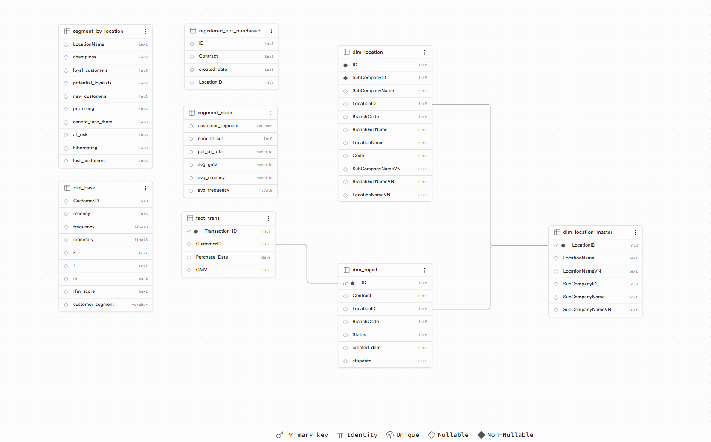

Customer Segmentation
RFM Analysis
Segmenting 4.35M customer contracts into 9 actionable cohorts using IQR-based RFM scoring — so the CSKH team can run targeted retention campaigns instead of blasting everyone with the same message.
Tech stack
The problem
The marketing team was running the same year-end campaign for every customer. High-value loyalists got the same message as dormant accounts — budget wasted, engagement low. They needed 4.35M customer contracts split into meaningful groups so the CSKH team could plan targeted outreach for each cohort.
A secondary blind spot: customers who registered but never made a single purchase — a group completely invisible in existing reports, representing a significant untapped activation opportunity.
Data model
3 raw CSV files (5.4M total rows) uploaded directly into Supabase and modelled as a star schema, with 4 derived tables created via SQL.
Schema
fact_trans ──→ dim_regist ──→ dim_location_master ←── dim_location
| Table | Rows | Description | Type |
|---|---|---|---|
dim_location |
116 | Raw branch master — SubCompany → Location → Branch hierarchy | Dimension |
dim_location_master |
59 | Deduplicated by LocationID — created as a clean FK anchor because BranchCode had duplicates in dim_location | Dimension |
dim_regist |
4.35M | Customer contracts with branch, status, and registration date | Dimension |
fact_trans |
1M | Transaction history Jun–Aug 2022 (GMV per customer per date) | Fact |
rfm_base |
942K | RFM scores + segment label per customer — computed in SQL | Derived |
segment_stats |
9 | Per-segment KPI rollup: count, %, avg GMV, avg recency, avg frequency | Derived |
segment_by_location |
~59 | Segment distribution pivoted by branch — one column per segment | Derived |
registered_not_purchased |
~3.4M | Customers who signed contracts but never transacted | Derived |
FK challenges encountered
ERROR 42830 — No unique constraint on referenced column
Triggered when trying to create a FK before the target column had a PRIMARY KEY. Fix: ALTER TABLE ... ADD PRIMARY KEY first.
ERROR 23505 — Could not create unique index on BranchCode
BranchCode repeats across locations (18 codes for 116 branches). Resolved by creating dim_location_master with unique LocationID as the FK target instead.
ERROR 23503 — FK violation on 0.5% of CustomerIDs
~4,700 CustomerIDs in fact_trans had no matching record in dim_regist. Used NOT VALID to skip validation of existing rows while enforcing integrity on future inserts.
Approach
All analytics logic lives in SQL on Supabase — no transformation layer outside the database.
Step 1 — RFM Scoring
Computed 3 metrics per customer, normalised by contract_age (years since registration) to avoid penalising newer customers:
- Recency — days since last purchase relative to 2022-09-01 (lower = better)
- Frequency — transaction count ÷ contract age in years
- Monetary — total GMV ÷ contract age in years
Each metric was scored 1–4 using IQR quartile thresholds — automatically computed via ROW_NUMBER() window function, no hardcoded boundaries. Results saved to rfm_base.
Step 2 — Segment Labels
Added customer_segment column to rfm_base via UPDATE ... SET ... CASE WHEN on cast integer scores. Key ordering rule: Cannot Lose Them (R=1) must precede At Risk (R≤2) to avoid being swallowed by the broader condition.
| Segment | Condition |
|---|---|
| Champions | R=4, F=4, M=4 |
| Loyal Customers | R≥3, F≥3, M≥3 |
| Potential Loyalists | R≥3, F≥2, M≥2 |
| New Customers | R=4, F≤2 |
| Promising | R≥3, F≤2, M≤2 |
| Cannot Lose Them | R=1, F≥3, M≥3 |
| At Risk | R≤2, F≥3, M≥3 |
| Hibernating | R≤2, F≤2, M≥2 |
| Lost Customers | R≤2, F≤2, M≤2 |
Key SQL techniques used
ROW_NUMBER() OVER (ORDER BY ...)
Used to rank customers by each RFM metric, enabling precise IQR quartile calculation without hardcoding thresholds.
SUM(COUNT()) OVER ()
Window function to compute % of total per segment in a single query pass — no subquery needed.
COUNT() FILTER (WHERE ...)
PostgreSQL's conditional aggregation used to pivot segment counts into columns by branch — equivalent to SQL Server's PIVOT syntax.
NOT EXISTS (SELECT 1 FROM fact_trans ...)
Efficient anti-join to identify registered customers with zero transactions, avoiding the performance overhead of NOT IN on large tables.
CREATE TABLE ... AS WITH ... SELECT
Materialised CTE results as permanent tables so Power BI could connect directly without re-running heavy aggregations on each refresh.
Power BI dashboard
4-page dashboard connected directly to Supabase via the PostgreSQL connector. Dark background (#0F1117) to maximise contrast for segment colour coding.
| Page | Audience | Key visuals |
|---|---|---|
| Executive Overview | C-level | 4 KPI cards (total customers, GMV, active buyers, % never purchased) · donut chart · top branches by GMV |
| Segment Analysis | CSKH team | Matrix with conditional formatting (green scale for count, gold for avg GMV) · treemap for % distribution |
| Location Performance | Regional managers | 100% stacked bar — LocationName × segment — to surface branches with high At Risk or Cannot Lose Them concentration |
| Never Purchased | Marketing | Card (total + %) · bar chart by branch · line chart of registration trend over time |
Screenshot

4-page Power BI dashboard — Executive Overview, Segment Analysis, Location Performance, and Never-Purchased Customers.
Results
What I'd do differently
Add a dim_date table from day one — time-intelligence in Power BI required workarounds without it. The transaction data only covers Jun–Aug 2022, so a proper date dimension would unlock month-over-month cohort tracking.
Also, IQR-based RFM scoring worked well but the next iteration would compare it against K-Means clustering to validate that the segment boundaries are truly data-driven rather than assumption-based quartile splits.